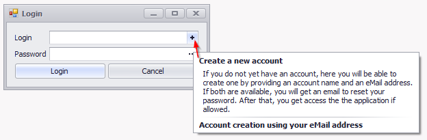
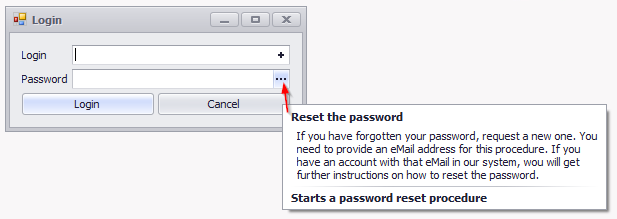
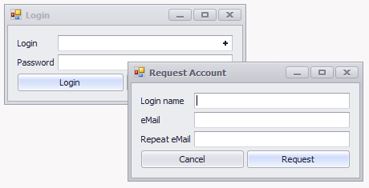
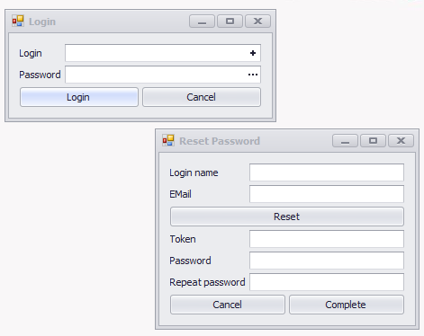

Dies ist eine Beispielanwendung, die mittels UML Modellierung entstanden ist. Der Code wurde automatisch erstellt. Diese Anwendung ermöglich Ihnen es, über Anwendungen zu schreiben und diese zu bewerten. Aus den Bewertungen können Html Seiten mittels einer Reporting Funktion erstellt werden. Ebenso ist ein Export nach Pdf möglich.

Um diese Anwendung nutzen zu können, brauchen Sie einen Account. Dieser wird mittels einer eMail Aktivierung eingerichtet, die Sie in zwei Schritten machen. Zuerst fordern Sie einen Account an. Dann müssen Sie auf eine Aktivierungsmail warten. Haben Sie diese erhalten, folgen Sie der Anleitung und füllen die Maske im zweiten Schritt aus.

Im zweiten Schritt setzen Sie Ihr Passwort zurück. Es wird aus Sicherheitsgründen kein Passwort generiert und gesendet. Es wird niemals an ein Passwort mit einer eMail erinnert. Sie können Ihr Passwort aber jederzeit zurücksetzen.

Hier fordern Sie einen Account an. Als Eingaben brauchen Sie eine gültige eMail Adresse und einen Account Namen, der noch nicht vergeben ist, Pracktischwerweise verwenden Sie Ihre eMail Adresse auch hier.

Wenn Sie eine eMail bekommen haben, geben Sie den Login, Ihre eMail Adresse, den Token und ein neues Passwort ein. Bitte wiederholen Sie das Passwort. Dann drücken Sie Complete. Nach dieser Aktivierung solten Sie sich anmelden können.
Bitte beachten Sie, dass evtl. andere mit der Anwendung experimentieren und Ihre Daten ändern oder löschen können. Die Daten werden von mir von Zeit zu Zeit gelöscht, oder bei sinnvollen Daten als Beispieldaten behalten.
Betrachten Sie diese Daten unter einer CC - share alike Lizenz veröffentlicht. Die Richtige Lizenz wird hier noch wiedergegeben.
Sie dürfen gerne eine andere Lizenz verwenden. Bitte geben Sie diese dann aber im Review Text am Ende an.
Laden Sie die Windows basierende ClickOnce Anwendung von hier herunter.